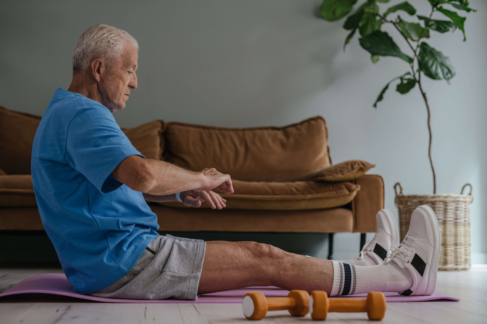

Social interaction
Loneliness is common amongst seniors and is linked to less social interaction (NHS, 2021). Despite this, VR is a fantastic opportunity to improve social interaction for seniors. According to a recent study of VR experiences introduced to seniors, results showcased that there were high levels of engagement and positive feelings and that they were willing to try the VR experience again (Kalantari et al., 2023).

Physical Health
With age, we tend to decline naturally in physical health, however, with VR, physical health can be improved. A study has shown that physical function and balance in older adults with impaired balance improved with VR game intervention more than with conventional exercise and non-intervention training (Ren et al., 2023).

Cognitive stimulation
An article on a study conducted on randomised seniors with cognitive impairments suggested that VR training helped improve cognitive skills dramatically (Chiu, Hsu and Ouyang, 2023). These cognitively stimulating activities help improve mental health.

Therapeutic Distraction and Rehabilitation Support
VR can be used as a distraction when seniors are receiving medical support as their attention would be diverted away.
Learning and education
VR can help seniors learn and experience stuff that they couldn't before such as visiting historic landmarks through virtual tours or learn something new in an engaging and interactive way.